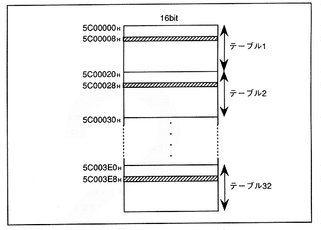

(6) Set DMA enable bit to 1 and DMA is activated when activation factor set in (5) occurs The shaded area shown in Fig. 2.10 is rewritten at once.
Figure 2.10 DMA transfer execution example with address addition value setting

However, (1) to (5) can be in any order.